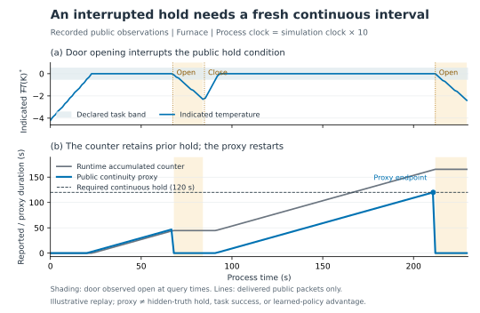
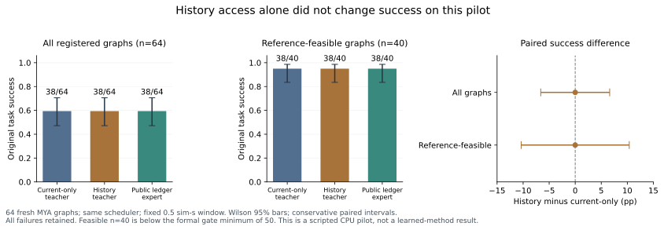

天平 · 等稳定，再读数
关闭防风门后等待稳定；样品缓慢蒸发，太早读数未稳定，太晚则漂移超容差。失败后实际作废重读，或换新样、去皮、再采集。
过程尺度 s=1；Medium 滤波。0.1/0.2 mg 两容差在同一轨迹上评分。
01 / TASKS AND MOTIVATION
关闭防风门后等待稳定；样品缓慢蒸发，太早读数未稳定，太晚则漂移超容差。失败后实际作废重读，或换新样、去皮、再采集。
过程尺度 s=1；Medium 滤波。0.1/0.2 mg 两容差在同一轨迹上评分。
炉温持续在带内且门关闭才计时。开门或出带清零；完成后需在规定窗口开门。开早后必须真实关门，重新完成连续保温再取件。
s=10；温带 ±0.5 K。运行时程序设得更长，避免程序自动结束改变目标的歧义。
各区液温和保温目标独立，机器人一次只服务一个区。错开期限包含可行、边缘和不可行情形；错过一区时，停止该区并争取其余区按时完成。
s=10；温带 ±2 K。取瓶是场景层抽象效果，未声称 vendor 实现了机器人转移。
这些任务衡量的是简化过程模型中的时间合约。温度暴露、运行时 reaction 计数与真实化学产物不同；独立评估也不等于硬件认证。
02 / FORMULATION AND PROPOSED MECHANISM
热任务从真值温度与门／样品事件重建连续进度。策略只看到公开指示值、合法历史和已执行事件；它维护的账本是估计，不获得评估器的真实截止时间。
按固定 tick 采样；同一 tick 先判定保温终点，再处理动作 EFFECT。首次进带不额外计一整 tick，动作后的中断立即清零。
当前时刻、累计 40 秒和最近 10 秒均相同，但连续进度为 30／20 秒。若目标是连续 30 秒，剩余义务是 0／10 秒。
抽象反例只解释信息需求，不是测量结果、学习优势或新定理；循环策略与经典监视器都能保留这段历史。
残余事件账本由公开事件更新；S/F/R 类型只作离线监督。实际成功动作、失败状态上的教师建议、同分支已验证恢复三者分开记录。
计划用共同循环骨干做账本 × 类型监督四格，并保留不学习的公开监视器＋资源调度参照。学习协议仍待冻结评审；不把模块数量当成创新或实验结果。

公开输入投影与因果账本候选已实现，43项软件测试通过；八份固定日志的2,377个已交付观测包通过兼容回放。账本在观测缺口、开门、出带或公开换样时重置当前代理，保留已观察到的历史完成事件。
这是公开观测代理，不是真值终点或学习优势。八份日志中没有观测缺口，缺口规则目前由合成测试验证；高延迟实录覆盖仍待补。未新增物理回合、教师查询、训练或S/F/R准入，M/B3仍未测试。
公开／特权专家经过同一异步执行链；未来随机耗时不对任何专家开放。
真值日志重算终点；原 F 保留，真实局部恢复单列 R，UNKNOWN 不准入。
目标 3,072 唯一 pair、3 个祖先、24 次续训；目前未开始，不称 OPD 或 RL 已验证。
任务图留出、多回合适应、RGB 与实际机器人动作分别验收。
03 / COMPLETED RESULTS

当前真值教师、带公开历史的教师、公开账本专家均为 38/64，可行层均 38/40；所有成败逐图一致。观察到的配对成功率差为 0，不声称统计等效或历史无用。
两个可行层残余失败分别晚 4／1 tick。只读重放匹配 1,047 次实际输出；串行资源、动作耗时与查询节奏共同消耗余量，单补历史不足以证明改善。
4,200 个物理回合、4,800 个评分成员，S=3,105、F=1,695、UNKNOWN=0。FURN 朴素角色在延迟下的 1,200 次失败均为 MISSED；教师／账本专家另有 219 次 LATE。
BAL 三角色逐实例标签一致：0.1 mg 全体 108/200，可行层 99/99，其余 101 例中包括 89 例无参考窗口；0.2 mg 为 200/200。不能以可行层替换全体结果，也不能把角色和容差当额外独立图。
查看已完成的 R5 条件、失败类型与区间 →R5 与 R7 使用不同版本的专家。R5 的证据不替 R7 通过门槛；reader 通过表示记录与独立评分一致，失败任务仍然是失败。主学习方法 M/B3 依然未测试。
04 / REGISTERED COMPLETE MATRIX
| 批次 | 预登记新案例 | 验证内容 |
|---|---|---|
| 热任务主校准 | 30,600 | 两任务、三窗口、三角色，延迟／长尾／连续性中断／组合 |
| BAL 主校准 | 12,000 | 十条件 × 两臂；两容差同 raw 评分 |
| 时间缩放敏感性 | 14,400 | s=5/20；固定过程时间要求，机器人动作仍按 sim 时间 |
| FURN 恢复干预 | 1,800 | 公开固定时刻开早，再实际关门／新保温／再开门 |
| BAL 恢复干预 | 1,800 | 显式过早／过晚采集；受控新样与宽质量压力分布分开 |
R7 已启动或按资源依赖排队，尚未完整通过。四个已经执行的固定首例完整读回通过，其中 FURN 保留原 F、同分支恢复判为 R_VERIFIED；这不是整体恢复率或训练准入。两类强制干预不估计自然失败频率。
完整原始日志读回后，才在 CERT_FEASIBLE 且 N≥50 的格上检验教师 P0/P1≥98%、公开账本 P0≥90%、朴素专家组合扰动≤85%。先选最小合格窗口，再核对应恢复机制；失败或证据不足就如实保留，不靠放宽窗口、删样或重试通过。
运行计数为发布时快照，时间与各批次计数见 RESULTS.json，不是实时监控。全部累计语义敏感性复用同 raw；未同时观察到终点明确记删失。尺度改变同时改变可观察过程时长，不把 s=10 的证书移用到其他尺度。
05 / EVIDENCE AND NEXT GATES
当前完整训练数据准入为 0；3,072 唯一 pair 与 fresh 学生状态聚合的阶段顺序仍需冻结评审。小模型只做过随机张量的 CPU 资源估算，没有用研究数据训练或保存策略。
ChemLab-Assets 用于内部过程与场景搭建，资产本体及教师私有材料不在本站发布。原生 RGB、实际机器人动作、真实化学产物和学习方法优势均保留各自验收，不能由 CPU 脚本结果代替。